화공기사(구) (2021-03-07 기출문제)
1과목: 화공열역학
1. 온도와 증기압의 관계를 나타내는 식은?
- Gibbs-Duhem equation
- Antoine equation
- Van Laar equation
- Van der Waals equation
(정답률: 51%)

2. 460K, 15 atm n-Butane 기체의 퓨가시티 계수는? (단, n-Butane의 환산온도(Tr)는 1.08, 환산압력(Pr)은 0.40, 제1, 2 비리얼 계수는 각각 -0.29, 0.014, 이심인자(Acentric factor; ω)는 0.193이다.)
- 0.9
- 0.8
- 0.7
- 0.6
(정답률: 18%)
3. 두 성분이 완전 혼합되어 하나의 이상용액을 형성할 때 i성분의 화학포텐션(μi)은 아래와 같이 표현된다. 동일 온도와 압력 하에서 I성분의 순수한 화학포텐(μpurei)의 표현으로 옳은 것은? (단, xi는 i성분의 몰분율, μ(T,P)는 해당 온도와 압력에서의 화학포텐셜을 의미한다.)
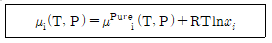
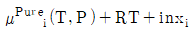
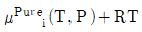
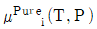
- RTlnxi
(정답률: 58%)
4. Cp가 3.5R(R; ideal gas constant)인 1몰의 이상기체가 10bar, 0.0⑤ m3에서 1bar로 가역정용과정을 거쳐 변화할 때, 내부에너지 변화(△U; J)와 엔탈피 변화(△H; J)는?
- △U= -11250, △H= -15750
- △U= -11250, △H= -9750
- △U= -7250, △H= -15750
- △U= -7250, △H= -9750
(정답률: 45%)
5. 100000kW를 생산하는 발전소에서 600K에서 스팀을 생산하여 발전기를 작동시킨 후 잔열을 300K에서 방출한다. 이 발전소의 발전효율이 이론적 최대효율의 60%라고 할 때, 300K에 방출하는 열량(kW)은?
- 100000
- 166667
- 233333
- 333333
(정답률: 36%)
6. 주위(Surrounding)가 매우 큰 전체 계에서 일손실(lost work)의 열역학적 표현으로 옳은 것은? (단, 하첨자 total, sys, sur, 0는 각각 전체, 계, 주위, 초기를 의미한다.)
- T0△Ssys
- T0△Stotal
- Tsur△Ssur
- Tsvs△Ssvs
(정답률: 45%)
7. 상태함수(State function)가 아닌 것은?
- 내부에너지
- 자유에너지
- 엔트로피
- 일
(정답률: 68%)
8. 화학반응의 평형상수(K)에 관한 내용 중 틀린 것은? (단, ai, vi는 각각 I성분의 활동도와 양론수이며 △G0는 표준 깁스(Gibbs) 자유에너지 변화량이다.)
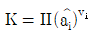
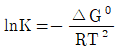
- K는 무차원이다.
- K는 온도에 의존하는 함수이다.
(정답률: 59%)
9. 압력이 매우 작은 상태의 계에서 제2 비리얼 계수에 관한 식으로 옳은 것은? (단, B는 제2비리얼계수, Z는 압축인자를 의미한다.)
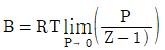
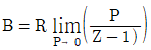
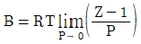
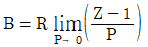
(정답률: 55%)
10. 어떤 실제기체의 부피를 이상기체로 가정하여 계산하였을 때는 100cm3/mol이고 잔류부피가 10cm3/mol일 때, 실제기체의 압축인자는?
- 0.1
- 0.9
- 1.0
- 1.1
(정답률: 39%)
11. 어떤 가역 열기관이 300℃에서 400kcal의 열을 흡수하여 일을 하고 50℃에서 열을 방출한다. 이 때 낮은 열원의 엔트로피 변화량(kcal/K)의 절대값은?
- 0.698
- 0.798
- 0.898
- 0.998
(정답률: 47%)
12. SI단위계의 유도단위와 차원의 연결이 틀린 것은? (단, 차원의 표기법은 시간: t, 길이: L, 질량: M, 온도: T, 전류: I이다.)
- Hz(hertz): t-1
- C(coulomb): I×t-1
- J(joule): M×L2×t-2
- rad(radian): -(무차원)
(정답률: 47%)
13. 0℃, 1 atm 이상기체 1 mol을 10 atm으로 가역 등온 압축할 때, 계가 받은 일(cal)은? (단, Cp와 CV는 각각 5, 3 cal/mol·K이다.)
- 1.987
- 22.40
- 273
- 1249
(정답률: 55%)
14. 어떤 기체 50kg을 300K의 온도에서 부피가 0.15m3인 용기에 저장할 때 필요한 압력(bar)은? (단, 기체의 분자량은 30g/mol이며, 300K에서 비리얼 계수는 -136.6cm3/mol이다.)
- 90
- 100
- 110
- 120
(정답률: 32%)
15. 질량보존의 법칙이 성립하는 정상상태의 흐름과정을 표시하는 연속방정식은? (단, A는 단면적, U는 속도, ρ는 유체 밀도, V는 유체 비부피를 의미한다.)
- △(UAρ)=0
- △(UA/ρ)=0
- △(Uρ/A)=0
- △(UAV)=0
(정답률: 48%)
16. 부피 팽창률(β)과 등온 압축률(k)의 비(k/β)를 옳게 표시한 것은?
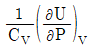
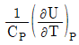
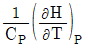
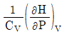
(정답률: 41%)
17. 액상과 기상이 서로 평형이 되어 있을 때에 대한 설명으로 틀린 것은?
- 두 상의 온도는 서로 같다.
- 두 상의 압력은 서로 같다.
- 두 상의 엔트로피는 서로 같다.
- 두 상의 화학포텐셜은 서로 같다.
(정답률: 62%)
18. 일정한 온도와 압력의 닫힌계가 평형상태에 도달하는 조건에 해당하는 것은?
- (dGt)T.P ＜ 0
- (dGt)T.P = 0
- (dGt)T.P ＞ 0
- (dGt)T.P = 1
(정답률: 68%)
19. 콘크스의 불완전연소로 인해 생성된 500℃ 건조가스의 자유도는? (단, 연소를 위해 공급된 공기는 질소와 산소만을 포함하며, 건조가스는 미연소코크스, 과잉공급 산소가 포함되어있으며, 건조가스의 추가 연소 및 질소산화물의 생성은 없다고 가정한다.)
- 2
- 3
- 4
- 5
(정답률: 25%)
20. 증기 압축식 냉동 사이클의 냉매 순환 경로는?
- 압축기 → 팽창밸브 → 증발기 → 응축기
- 압축기 → 응축기 → 증발기 → 팽창밸브
- 응축기 → 압축기 → 팽창밸브 → 증발기
- 압축기 → 응축기 → 팽창밸브 → 증발기
(정답률: 42%)
2과목: 단위조작 및 화학공업양론
21. 어떤 기체의 열용량 관계식이 아래와 같을 때, 영국표준단위계로 환산하였을 때의 관계식으로 옳은 것은? (단, 열량단위는 Btu, 질량단위는 pound, 온도단위는 Fahrenheit을 사용한다.)
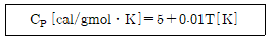
- CP = 16.189 + 0.⑤83T
- CP = 7.551 + 0.0309T
- CP = 4.996+ 0.0⑤6T
- CP = 1.544 + 1.5223T
(정답률: 34%)
22. 82℃ 벤젠 20mol%, 톨루엔 80mol% 혼합용액을 증발시켰을 때 증기 중 벤젠의 몰분율은? (단, 벤젠과 톨루엔의 혼합용액은 이상용액의 거동을 보인다고 가정하고, 82℃에서 벤젠과 톨루엔의 포화증기압은 각각 811, 314mmHg이다.)
- 0.360
- 0.392
- 0.721
- 0.785
(정답률: 54%)
23. 이상기체혼합물일 대 참인 등식은?
- 몰% = 분압% = 부피%
- 몰% = 부피% = 중량%
- 몰% = 중량% = 분압%
- 몰% = 부피% = 질량%
(정답률: 52%)
24. 염화칼슘의 용해도 데이터가 아래와 같을 때, 80℃ 염화칼슘 포화용액 70g을 20℃로 냉각시켰을 때 석출되는 염화칼슘 결정의 무게(g)는?
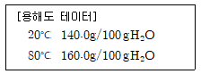
- 4.61
- 5.39
- 6.61
- 7.39
(정답률: 49%)
25. 세기 성질(intensive property)이 아닌 것은?
- 온도
- 압력
- 엔탈피
- 화학포텐셜
(정답률: 47%)
26. 분자량이 103인 화합물을 분석해서 아래와 같은 데이터를 얻었다. 이 화합물의 분자식은?
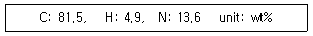
- C82H5H14
- C16HN7
- C9H3N
- C7H5N
(정답률: 58%)
27. 25℃에서 71g의 Na2SO4를 증류수 200g에 녹여 만든 용액의 증기압(mmHg)은? (단, Na2SO4의 분자량은 142g/mol이고, 25℃ 순수한 물의 증기압은 25mmHg이다.)
- 23.9
- 22.0
- 20.1
- 18.5
(정답률: 28%)
28. CO2 25vol%와 NH3 75vol%의 기체 혼합물 중 NH3의 일부가 흡수탑에서 산에 흡수되어 제거된다. 흡수탑을 떠나는 기체 중 NH3 함량이 37.5vol%일 때, NH3의 제거율은? (단, CO2의 양은변하지 않으며 산 용액은 증발하지 않는다고 가정한다.)
- 15%
- 20%
- 62.5%
- 80%
(정답률: 46%)
29. 1mol당 0.1mol의 증기가 있는 습윤공기의 절대습도는?
- 0.069
- 0.1
- 0.191
- 0.2
(정답률: 36%)
30. 70℉, 750 mmHg 질소 79vol%, 산소 21vol%로 이루어진 공기의 밀도(g/L)는?
- 1.10
- 1.14
- 1.18
- 1.22
(정답률: 37%)
31. 충전탑의 높이가 2m이고 이론 단수가 5일 때, 이론단의 상당높이(HETP)는?
- 0.4
- 0.8
- 2.5
- 10
(정답률: 42%)
32. FPS 단위로부터 레이놀즈수를 계산한 결과가 3522이었을 때, MKS 단위로 환산하여 구한 레이놀즈수는? (단, 1ft는 3.2808m, 1kg은 2.20462lb이다.)
- 2.839×10-4
- 2367
- 3522
- 5241
(정답률: 50%)
33. 고체면에 접하는 유체의 흐름에 있어서 경계층이 분리되고 웨이트(wake)가 형성되어 발생하는 마찰현상을 나타내는 용어는?
- 두손실(head loss)
- 표면마찰(skin friction)
- 형태마찰(form friction)
- 자유난류(free turbulent)
(정답률: 27%)
34. 교반 임펠러에 있어서 Froude number(NFr)는? (단, n는 회전속도, Da는 임펠러의 직경, ρ는 액체의 밀도, μ는 액체의 점도이다.)
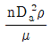
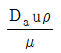
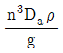
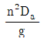
(정답률: 20%)
35. 관(pipe, tube)의 치수에 대한 설명 중 틀린 것은?
- 파이프의 벽두께는 Schedule Number로 표시할 수 있다.
- 튜브의 벽두께는 BWG번호로 표시할 수 있다.
- 동일한 외경에서 Schedule Number가 클수록 벽두께가 두껍다.
- 동일한 외경에서 BWG가 클수록 벽두께가 두껍다.
(정답률: 56%)
36. 침수식 방법에 의한 수직관식 증발관이 수평관식 증발관보다 좋은 이유가 아닌 것은?
- 열전달 계수가 크다.
- 관석이 생기는 물질의 증발에 적합하다.
- 증기 중의 비응축 기체의 탈기효율이 좋다.
- 증발효과가 좋다.
(정답률: 39%)
37. 3층의 벽돌로 쌓은 노벽의 두께가 내부부터 차례로 100, 150, 200mm, 열전도도는 0.1, 0.⑤, 1.0kcal/m·h·℃이다. 내부온도가 800℃, 외벽의 온도는 40℃일 때, 외벽과 중간벽이 만나는 곳의 온도(℃)는?
- 76
- 97
- 106
- 117
(정답률: 24%)
38. 액액 추출의 추제 선택 시 고려해야 할 사항으로 가장 거리가 먼 것은?
- 선택도가 큰 것을 선택한다.
- 추질과 비중차가 적은 것을 선택한다.
- 비점이 낮은 것을 선택한다.
- 원용매를 잘 녹이지 않는 것을 선택한다.
(정답률: 43%)
39. 벤젠 40mol%와 톨루엔 60mol%의 혼합물을 100kmol/h의 속도로 정류탑에 비점의 액체상태로 공급하여 증류한다. 유출액 중의 벤젠 농도는 95mol%, 관출액 중의 농도는 5mol% 일 때, 최소 환류비는? (단, 벤젠과 톨루엔의 순성분 증기압은 각각 1016, 4⑤mmHg이다.)
- 0.63
- 1.43
- 2.51
- 3.42
(정답률: 35%)
40. 슬러지나 용액을 미세한 입자의 형태로 가열하여 기체 중에 분산시켜 건조시키는 건조기는?
- 분무 건조기
- 원통 건조기
- 회전 건조기
- 유동층 건조기
(정답률: 53%)
3과목: 공정제어
41. 제어시스템을 구성하는 주요 요소로 가장 거리가 먼 것은?
- 제어기
- 제어밸브
- 측정장치
- 외부교란변수
(정답률: 53%)
42. 열교환기에서 외부교란 변수로 볼 수 없는 것은?
- 유입액 온도
- 유입액 유량
- 유출액 온도
- 사용된 수증기의 성질
(정답률: 44%)
43. G(s)=10/(s+1)2인 공정에 대한 설명 중 틀린 것은?
- P 제어를 하는 경우 모든 양의 비례이득 값에 대해 제어계가 안정하다.
- PI 제어를 하는 경우 모든 양의 비례이득 및 적분시간에 대해 제어계가 안정하다.
- PD 제어를 하는 경우 모든 양의 비례이득 및 미분시간에 대해 제어계가 안정하다.
- 한계이득, 한계주파수를 찾을 수 없다.
(정답률: 21%)
44. 근의 궤적(root locus)은 특성방정식에서 제어기의 비례이득 Kc가 0으로부터 ∞까지 변할 때, 이 Kc에 대응하는 특성방정식의 무엇을 s 평면상에 점철하는 것인가?
- 근
- 이득
- 감쇠
- 시정수
(정답률: 35%)
45. 폐루프 특성방정식이 다음과 같을 때 계가 안정하기 위한 Kc의 필요충분조건은?
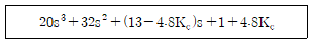
- -0.21 ＜ Kc ＜ 1.59
- -0.21 ＜ Kc ＜ 2.71
- 0 ＜ Kc ＜ 2.71
- -0.21 ＜ Kc ＜ 0.21
(정답률: 41%)
46. 다음 식으로 나타낼 수 있는 이론은?
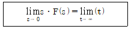
- Final Theorem
- Stkes Theorem
- Taylers Theorem
- Ziegle-Nichols Theorem
(정답률: 54%)
47. 주파수 응답에서 위상 앞섬(phase lesad)나타내는 제어기는?
- P 제어기
- PI 제어기
- PD 제어기
- 제어기는 모두 위상이 지연을 나타낸다.
(정답률: 51%)
48. 동특성이 매우 빠르고 측정 잡음이 큰 유량루프의 제어에 관련한 내용 중 틀린 것은?
- PID 제어가의 미분동작을 강화하여 제어성능을 향상시킨다.
- 공정의 전체 동특성은 주로 밸브의 동특성에 의하여 결정된다.
- 비례동작보다는 저군동작 위주로 PID제어기를 조율한다.
- 공정의 시상수가 작고 시간지연이 없어 상대적으로 빠른 제어가 가능하다.
(정답률: 28%)
49. 제어계의 응답 중 편차(offset)의 의미 가장 옳게 설명한 것은?
- 정상상태에서 제어기 입력과 출력의 차
- 정상상태에서 공정 입력과 출력의 차
- 정상상태에서 제어기 입력과 공정 출력의 차
- 정상상태에서 피제어 변수의 희망값과 실제 값의 차
(정답률: 43%)
50. 그림과 같은 단면적이 3m2인 액위계(liquid level system)에서 qo=8√h m3/min이고 평균 조작수위 (
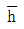
)는 4m일 때, 시간상수(time constant; min)는?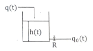
- 4/9
- 3√3/4
- 3/4
- 3/2
(정답률: 18%)
51. 다음 블럭선도에서 C/R의 전달함수는?
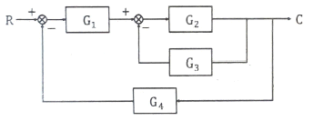
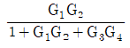
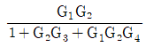
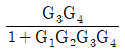
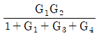
(정답률: 55%)
52. 저장탱크에서 나가는 유량(FO)을 일정하게 하기 위한 아래 3개의 P&ID 공정도의 제어방식을 옳게 설명한 것은?
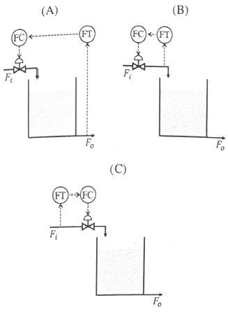
- A, B, C 모두 앞먹임(feedforward) 제어
- A와 B는 앞먹임(feedforward)이고, C는 되먹임(feedback) 제어
- A와 B는 되먹임(feedback) 제어, C는 앞먹임(feedforward) 제어
- A는 되먹임(feedback) 제어, B와 C는 앞먹임(feedforward) 제어
(정답률: 38%)
53. 전달함수 G(s)의 단위계단(unit step) 입력에 대한 응답을 ys, 단위충격(nuit impulse) 입력에 대한 응답을 yI라 한다면 ys와 yI의 관계는?
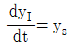
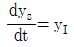
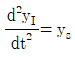
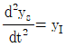
(정답률: 41%)
54. 함수 e-bt의 라플라스 변환 함수는?
- 1/(s-b)
- e-bs
- 1/(s+b)
- s+b
(정답률: 57%)
55. 공정제어의 목적과 가장 거리가 먼 것은?
- 반응기의 온도를 최대 제한값 가까이에서 운전함으로 반응속도를 올려 수익을 높인다.
- 평형반응에서 최대의 수율이 되도록 반응 온도를 조절한다.
- 안전을 고려하여 일정 압력 이상이 되지 않도록 반응속도를 조절한다.
- 외부 시장 환경을 고려하여 이윤이 최대가 되도록 생산량을 조정한다.
(정답률: 52%)
56. 시간지연(delay)이 포함되고 공정이득이 1인 1차 공정에 비례제어기가 연결되어 있다. 교차주파수(crossover frequency)에서의 각속도(ω)가 0.5rad/min일 때이득여유가 1.7이 되려면 비례제어 상수(Kc)는? (단, 시간상수는 2분이다.)
- 0.83
- 1.41
- 1.70
- 2.0
(정답률: 22%)
57. Error(e)에 단위계단 변화 (unit step change)가 있었을 때 다음과 같은 제어기 출력응답(response; P)을 보이는 제어기는?
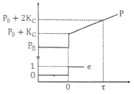
- PID
- PD
- PI
- P
(정답률: 23%)
58. 어떤 액위(liquid level) 탱크에서 유입되는 유량(m3/min)과 탱크의 액위(h) 간의 관계는 다음과 같은 전달함수로 표시된다. 탱크로 유입되는 유량에 크기 1인 계단변화가 도입되었을 때 정상상태에서 h의 변화폭은?
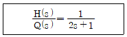
- 6
- 3
- 2
- 1
(정답률: 32%)
59.
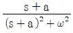
의 라플라스 역변환은?- t cosωt
- e-at cosωt
- t sinωt
- eat cosωt
(정답률: 57%)
60. 2차계의 주파수 응답에서 정규화된 진폭비(AR/k)의 최대값에 대한 설명으로 옳은 것은?
- 감쇠계수(damping factor)가 √2/2보다 작으면 1이다.
- 감쇠계수(damping factor)가 √2/2보다 크면 1이다.
- 감쇠계수(damping factor)가 √2/2보다 작으면 1/2τ이다.
- 감쇠계수(damping factor)가 √2/2보다 크면 1/2τ이다.
(정답률: 25%)
4과목: 공업화학
61. 황산제조에서 연실의 주된 작용이 아닌 것은?
- 반응열을 발산시킨다.
- 생성된 산물의 응축을 위한 공간을 부여한다.
- Glover탑에서 나오는 SO2가스를 산화시키기 위한 시간과 공간을 부여한다.
- 가스 중의 질소산화물을 H2SO4에 흡수시켜 회수하여 함질황산을 공급한다.
(정답률: 42%)
62. 유지 성분의 공업적 분리 방법으로 다음 중 가장 거리가 먼 것은?
- 분별결정법
- 윈심분리법
- 감압증류법
- 분자증류법
(정답률: 30%)
63. 인광석에 의한 과린산석회 비료의 제조공정 화학반응식으로 옳은 것은?
- CaH4(PO4)2+NH3 ⇄ NH4H2PO4+CaHPO4
- CaH4(PO4)2+4H3PO4+3H2O ⇄ 3[CaH4(PO4)2ㆍH2O]
- CaH4(PO4)2+2H2SO4+5H2O ⇄ CaH4(PO4)2ㆍH2O+2(CaSO4ㆍ2H2O)
- CaH4(PO4)2+4HCl ⇄ CaH4(PO4)2+2CaCl2
(정답률: 39%)
64. 산화에틸렌의 수화반응로 생성되는 물질은?
- 에틸알코올
- 아세트알데히드
- 메틸알코올
- 에틸렌글리콜
(정답률: 43%)
65. 다음 반응의 주생성물 A는?
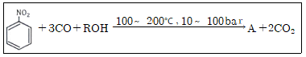
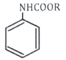
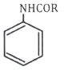
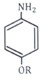
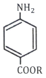
(정답률: 36%)
66. 암모니아 소다법에서 탄산화과정의 중화탑이 하는 주된 작용은?
- 암모니아 함수의 부분 탄산화
- 알칼리성을 강산성으로 변화
- 침전탑에 도입되는 하소로 가스와 암모니아의 완만한 반응 유도
- 온도 상승을 억제
(정답률: 47%)
67. 식염수를 전기 분해하여 1 ton의 NaOH를 제조하고자 할 때 필요한 NaCl의 이론량(kg)은? (단, Na와 Cl의 원자량은 각각 23, 35.5g/mol이다.)
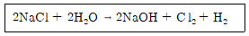
- 1463
- 1520
- 2042
- 3211
(정답률: 48%)
68. 음성감광제와 양성감광제를 비교한 것 중 틀린 것은?
- 음성감광제가 양성감광제보다 노출속도가 빠르다.
- 음성감광제가 양성감광제보다 분해능이 좋다.
- 음성감광제가 양성감광제보다 공정상태에 민감하다.
- 음성감광제가 양성감광제보다 접착성이 좋다.
(정답률: 29%)
69. 석유화학 공정 중 전화(conversion)와 정제로 구분할 때 전화공정에 해당하지 않는 것은?
- 분해(cracking)
- 개질(reforming)
- 알킬화(alkylation)
- 스위트닝(sweetening)
(정답률: 49%)
70. 순수 HCl 가스(무수염산)를 제조하는 방법은?
- 질산 분해법
- 흡착법
- Hargreaves법
- Deacon법
(정답률: 39%)
71. 건전지에 대한 설명 중 틀린 것은?
- 용량을 결정하는 원료는 이산화망간이다.
- 아연의 자기방전을 방지하기 위하여 전해액을 중성으로 한다.
- 전해액에 부식을 방지하기 위하여 소량의 ZnCl2을 첨가한다.
- 아연은 양극에서 염소 이온과 반응하여 ZnCl2이 된다.
(정답률: 29%)
72. 열분산이 용이하고 반응 혼합물의 점도를 줄일 수 있으나 연쇄이동반응으로 저분자량의 고분자가 얻어지는 단점이 있는 종합방법은?
- 용액중합
- 괴상중합
- 현탁중합
- 유화중합
(정답률: 43%)
73. 다음의 반응식으로 질산이 제조될 때 전체 생성물 중 질산의 질량%는?
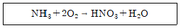
- 58
- 68
- 78
- 88
(정답률: 53%)
74. 환경친화적인 생분해성 고분자가 아닌 것은?
- 지방족폴리에스테르
- 폴리카프로락톤
- 폴리이소프렌
- 전분
(정답률: 30%)
75. 아세틸렌과 반응하여 염화비닐을 만드는 물질은?
- NaCl
- KCl
- HCl
- HOCl
(정답률: 58%)
76. 암모니아 합성공정에 있어서 촉매 1m3 당 1시간에 통과하는 원료가스의 m3 수를 나타내는 용어는? (단, 가스의 부피는 0℃, 1 atm 상태로 환산한다.)
- 순간속도
- 공시득량
- 공간속도
- 원단위
(정답률: 47%)
77. 폴리아미드계인 nylon 66이 이용되는 분야에 대한 설명으로 가장 거리가 먼 것은?
- 용융방사한 것은 직물로 사용된다.
- 고온의 전열기구용 재료로 이용된다.
- 로프 제작에 이용된다.
- 사출성형에 이용된다.
(정답률: 52%)
78. 아미노화 반응 공정에 대한 설명 중 틀린 것은?
- 암모니아의 수소원자를 알킬기나 알릴기로 차환하는 공정이다.
- 암모니아의 수소원자 1개가 아실, 술포닐기로 치환된 것을 1개 아미드라고 한다.
- 아미노환 공정에는 환원에 의한 방법과 암모니아 분해에 의한 방법 등이 있다.
- Bѐchamp method는 철과 산을 사용하는 환원 아미노화 방법이다.
(정답률: 35%)
79. 가수분해에 관한 설명 중 틀린 것은?
- 무기화합물의 가수분해는 산ㆍ염기 중화 반응의 역반응을 의미한다.
- 니트릴(nitrile)은 알칼리 환경에서 가수분해되어 유기산을 생성한다.
- 화합물이 물과 반응하여 분리되는 반응이다.
- 알켄(Alkene)은 알칼리 환경에서 가수분해된다.
(정답률: 31%)
80. 염산 제조에 있어서 단위 시간에 흡수되는 HCl 가스량(G)을 나타내는 식은? (단, K는 HCl가스 흡수계수, A는 기상-액상의 접촉면적, △P는 기상-액상과의 HCl 분압차이다.)
- G=K2A
- G=K△P
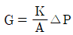
- G=KA△P
(정답률: 48%)
5과목: 반응공학
81. 연속반응 A → R → S → T → U에서 각 성분의 농도를 시간의 함수로 도시(plot)할 때 다음 설명 중 틀린 것은? (단, 초기에는 A만 존재한다.)
- CR 곡선은 원점에서의 기울기가 양수(+)값이다.
- CS, CT, CU 곡선은 원점에서의 기울기가 0이다.
- CS가 최대일 때 CT 곡선의 기울기가 최소이다.
- CA는 단조감소함수, CU는 단조증가함수이다.
(정답률: 35%)
82. 기체반응물 A(AA0= 1mol/L)를 혼합흐름 반응기(V=0.1L)에 넣어서 반응시킨다. 반응식이 2A → R이고, 실험결과가 다음 표와 같을 때, 이 반응의 속도식(-rA; mol/Lㆍh)은?
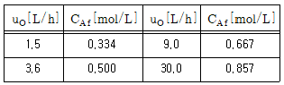
- -rA=(30h-1)CA
- -rA=(36h-1)CA
- -rA=(100L/molㆍh)CA2
- -rA=(150L/molㆍh)CA2
(정답률: 24%)
83. 부반응아 있는 어떤 액상 반응이 아래와 같을 때, 부반응을 적게 하는 반응기 구조는? (단, k1=3k2, rR=k1CA2CB, rU=k2CACB3이고, 부반응은 S와 U를 생성하는 반응이다.)
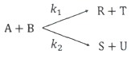
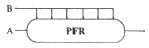
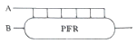
(정답률: 48%)
84. 병렬반응하는 A의 속도상수와 반응식이 아래와 같을 때, 생성물 분포비율(rR/rS)은? (단, 두 반응이 차수는 동일하다.)
- 속도 상수에 관계없다.
- A의 농도에 관계없다.
- A의 농도에 비례해서 커진다.
- A의 농도에 비례해서 작아진다.
(정답률: 47%)
85. 다음과 같이 반응물과 생성물의 에너지상태가 주어졌을 때 반응열 관계로서 옳은 것은?
- 발열반응이며, 발열량은 20 cal이다.
- 발열반응이며, 발열량은 40 cal이다.
- 흡열반응이며, 흡열량은 20 cal이다.
- 흡열반응이며, 흡열량은 40 cal이다.
(정답률: 43%)
86. 반응 물질의 농도를 낮추는 방법은?
- 관형반응기(tubular reactor)를 사용한다.
- 혼합흐름반응기(mixed flow areactor)를 사용한다.
- 회분식반응기(batch areactor)를 사용한다.
- 순환반응기(recycle areactor)에서 순환비를 낮춘다.
(정답률: 34%)
87. 균일계 1차 액상반응이 회분반응기에서 일어날 때 전화율과 반응시간의 관계를 옳게 나타낸 것은?
- ln(1-XA)=kt
- ln(1-XA)=-kt
(정답률: 45%)
88. 액상 1차 직렬반응이 관형반응기(PFD)와 혼합반응기(CSTR)에서 일어날 때 R성분의 농도가 최대가 되는 PFR의공간시간(τP)과 CSTR의공간시간(τC)에 관한 식으로 옳은 것은?
- τC/(τP ＞ 1
- τC/(τP ＜ 1
- τC/(τP = 1
- τC/(τP = k
(정답률: 23%)
89. A → R 반응이 회분식 반응기에서 일어날 때 1시간 후의 전화율은? (단, -rA=3CA0.5mol/Lㆍh, CA0=1 mol/L이다.)
- 0
- 1/2
- 2/3
- 1
(정답률: 25%)
90. 1차 비가역 액상반응을 관형반응기에서 반응시켰을 때 공간속도가 6000h-1이었으며 전화율은 40%였다. 같은 반응기에서 전화율이 90%가 되게 하는 공간속도(h-1)는?
- 1221
- 1331
- 1441
- 1551
(정답률: 40%)
91. 300J/mol의 활성화 에너지를 갖는 반응의 650K 반응 속도는 500K에서의 반응 속도보다 몇 배 빨라지는가?
- 1.02
- 2.02
- 3.02
- 4.02
(정답률: 43%)
92. 다음은 Arrhenius 법칙에 의해 도시(plot)한 활성화 에너지(Activation energy)에 대한 그래프이다. 이 그래프에 대한 설명으로 옳은 것은?
- 직선 B보다 A의 활성화 에너지가 크다.
- 직선 A보다 B의 활성화 에너지가 크다.
- 초기에는 직선 A의 활성화 에너지가가 크나 후기에는 B가크다.
- 초기에는 직선 B의 활성화 에너지가가 크나 후기에는 A가크다.
(정답률: 41%)
93. 반응기의 체적이 2000L인 혼합반응기에서 원료가 1000mol/min씩 공급되어서 80%가 전화될 때, 원료 A의 소멸속도(mol/Lㆍmin)는?
- 0.1
- 0.2
- 0.3
- 0.4
(정답률: 40%)
94. 화학반응의 온도의 존성을 설명하는 것과 관계가 가장 먼 것은?
- 볼츠만 상수(Boltamann constant)
- 분자 충돌 이론(Collision theory)
- 아레니우스식((Arrhenius equation)
- 랭뮤어 힌셜우드 속도론(Langmuir-Hinshelwood kinetics)
(정답률: 29%)
95. 순환반응기에서 반응기 출구 전화율이 입구 전화율의 2배일 때 순환비는?
- 0
- 0.5
- 1.0
- 2.0
(정답률: 33%)
96. 유효계수(η)에 대한 설명 중 틀린 것은? (단, h는 thiele modulus이다.)
- η는 기공확산에 의해 느려지지 않았을 때의 속도분의 기공 내 실제 평균반응속로 정의된다.
- h ＞ 10 일 때 η=∞이다.
- h ＜ 0.1 일 때 η≅1이다.
- η는 h만의 함수이다.
(정답률: 25%)
97. 반응물 A가 회분반응기에서 비가역 2차 액상반응으로 분해하는데 5분 동안에 50%가 전화된다고 할 때, 75% 전화에 걸리는 시간(min)은?
- 5.0
- 7.5
- 15.0
- 20.
(정답률: 47%)
98. 다음과 같은 반응을 통해 목적생성물(R)과 그 밖의 생성물(S)이 생긴다. 목적생성물의 생성을 높이기 위한 반응물 농도 조건은? (단, Cx는 x물질의 농도를 의미한다.)
- CB를 크게 한다.
- CA를 크게 한다.
- CA를 작게 한다.
- CA, CB와 무관하다.
(정답률: 40%)
99. 액상 2차 반응에서 A의 농도가 1 mol/L일 때 반웅속도가 0.1mol/Lㆍs라고하면 A의 농도가 5 mol/L일 때 반응속도(mol/Lㆍs)는? (단, 온도변화는 없다고 가정한다.)
- 1.5
- 2.0
- 2.5
- 3.0
(정답률: 50%)
100. 어떤 공장에서 아래와 같은 조건을 만족하는 공정을 가동한다고 할 때 첨가해야하는 D의 양(mol)은? (단, 반응은 완전히 반응한다고 가정한다.)
- 19.6
- 29.6
- 39.6
- 49.6
(정답률: 22%)